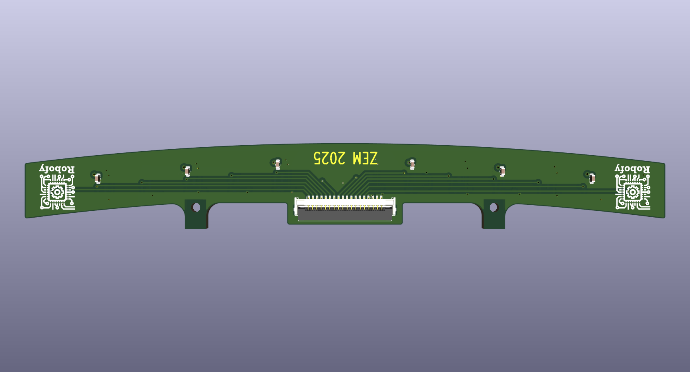
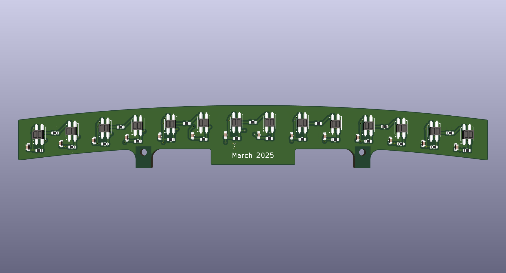
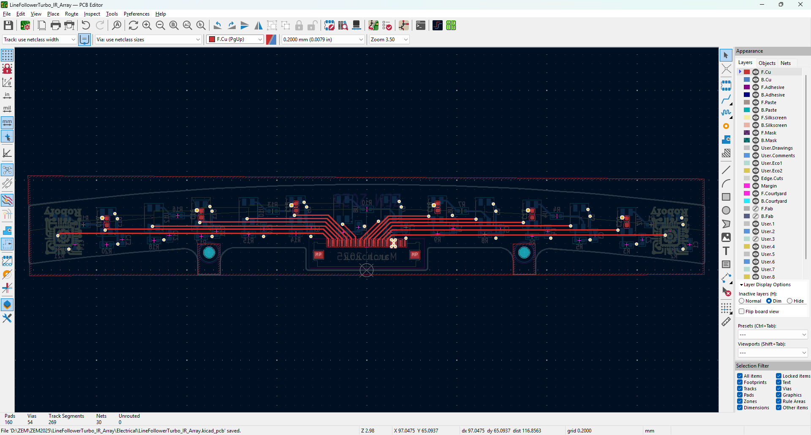
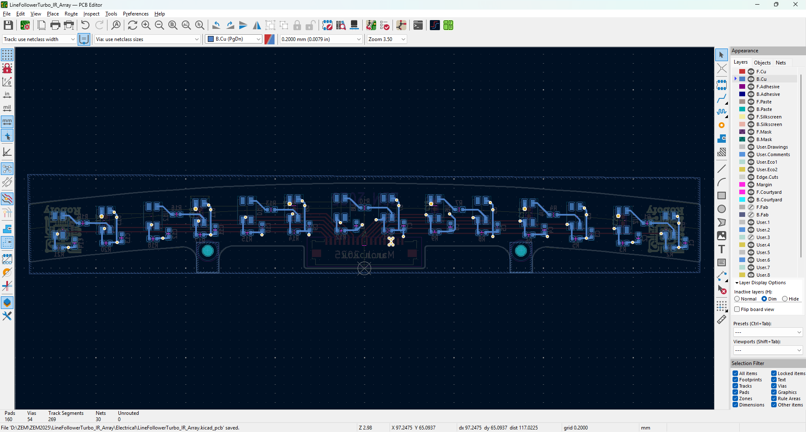

IR Sensor Array for Line Follower Robot

Precision Line Detection System
Description
This is a dedicated IR sensor array PCB designed for the Line Follower Turbo robot participating in the ZEM2025 competition. The array provides high-resolution line detection capabilities using an optimized arrangement of infrared sensors and signal conditioning circuitry. This specialized module handles all the sensing requirements for robust line following in competitive robotics environments.
Key Features
- Multiple infrared LED emitter and photodiode receiver pairs
- Precision analog signal conditioning and amplification
- Individual sensor channel isolation to prevent crosstalk
- Optimized optical geometry for line detection
- Single-ended or differential output options
- Compatible with microcontroller ADC inputs
- Compact form factor for robot integration
- Low power consumption design
- High sensitivity across wide distance range
Sensor Array Configuration
The IR sensor array uses a carefully positioned grid of infrared transceivers to detect the line beneath the robot. Each sensor channel has its own signal conditioning circuit, including current-to-voltage conversion and filtering. The optical design ensures minimal cross-talk between adjacent sensors while maximizing sensitivity to the target line. This configuration allows the microcontroller to determine not just line presence, but also the line's position relative to the robot's center.




Signal Conditioning
Each IR sensor requires dedicated signal processing to convert the photodiode current into a usable analog voltage. The PCB incorporates trans-impedance amplifiers for each channel, followed by filtering to reduce noise and interference. Output amplifiers provide buffering and level adjustment to ensure the signals fit within the microcontroller's ADC input range. This multi-stage approach delivers clean, reliable line detection signals even in varying ambient light conditions.
Environmental Performance
The IR sensor array is designed to function reliably across the competitive environment encountered in ZEM2025 competitions. Extensive signal filtering mitigates the effects of ambient light interference, artificial lighting variations, and electromagnetic noise. The sensor mounting geometry and optical design ensure consistent detection performance across different line colors and surface materials.
Integration with Main PCB
The IR sensor array connects to the main Line Follower Turbo robot PCB via a standard connector interface. The modular design allows for independent testing and development of both the sensor array and main control electronics. This separation of concerns simplifies debugging and enables optimization of each subsystem independently.
Tools & Technologies
EDA: KiCad
Design: Schematic capture, PCB layout, multi-layer board
Sensors: Infrared LED emitters and photodiode receivers
Signal Processing: Trans-impedance amplifiers, filtering circuits
Manufacturing: Professional PCB fabrication
Competition: ZEM2025 Line Follower Category
Competitive Advantages
- High Resolution: Multiple sensors provide detailed line position information
- Reliability: Robust filtering ensures consistent performance in competitive environments
- Modularity: Separate PCB enables independent optimization and testing
- Performance: Optimized signal conditioning for maximum sensitivity and speed
- Integration: Seamless connection to main robot control system